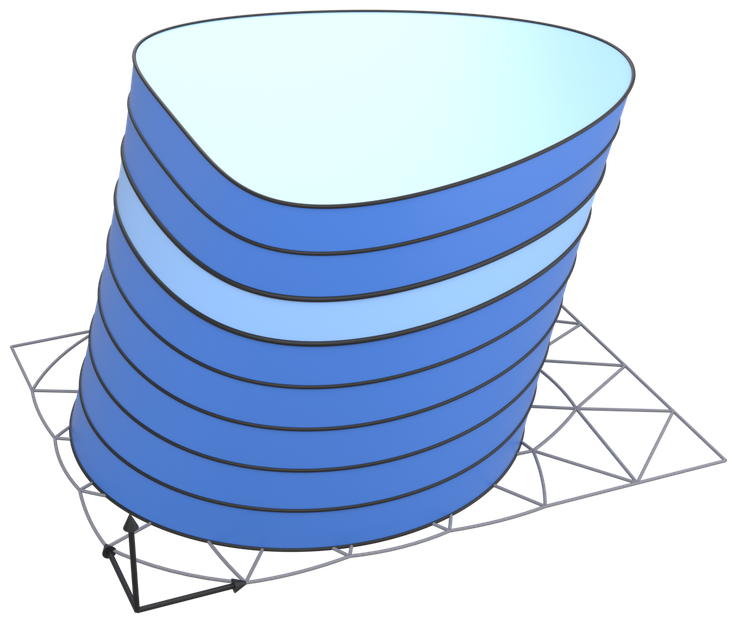

Stability, well-posedness and a priori error derivations from an assumed list of discrete inequalities are formalised in Lean 4 with Mathlib, with an AI assistant.
Abstract
We present and analyse an unfitted space-time discontinuous Galerkin (DG) method of arbitrary order for convection-diffusion problems on moving domains in up to three space dimensions. The method is discontinuous in space and time and uses upwind fluxes, so that convection is stabilised without additional terms and a Ghost penalty is needed only in the vicinity of the moving boundary. We prove inf-sup stability in a problem-specific norm, which in addition to the coercive part controls the time derivative in the diffusion-dominated regime and the material derivative in the convection-dominated regime. From this we derive a priori error estimates of high order in space and time for both regimes, including vanishing diffusion. Numerical experiments confirm the convergence rates and the robustness with respect to the diffusion coefficient.
Problem
Convection-diffusion problems on moving domains need discretisations of arbitrary order that stay robust across diffusion-dominated and convection-dominated regimes, including vanishing diffusion. Earlier unfitted space-time analyses used continuous-in-space functions and treated the two regimes separately with different stabilisations.
Approach
The authors propose an unfitted space-time discontinuous Galerkin method that is discontinuous in both space and time and uses upwind fluxes, so a Ghost penalty is needed only near the moving boundary. They prove inf-sup stability in a problem-specific norm and derive a priori error estimates. The derivations of stability, well-posedness and error results from an explicit assumed list of discrete inequalities were formalised in Lean 4 with Mathlib with help from an AI assistant. That assumed list is verified in Lean only for three model problems. Numerical experiments use ngsxfem on a kite-shaped moving domain.

Figure 2: Kite example on the coarsest level i=1 ( h=0.45 , 8 time slabs; time axis scaled). (a) Space-time domain Q over the background mesh, with the time levels t_{n} and the slab Q^{n} , n=6 , highlighted. (b), (c) Active prisms of this slab under the isoparametric mapping \Theta_{h} ( k=2 , true scale) and the space-time facets F\times I_{n} with Ghost penalty (orange): F\in\mathcal{F}^{n}_{\
Results
The analysis gives high-order error estimates in space and time for both regimes, including vanishing diffusion, and the Lean kernel checks these derivations. Numerical experiments confirm the convergence rates and robustness with respect to the diffusion coefficient.